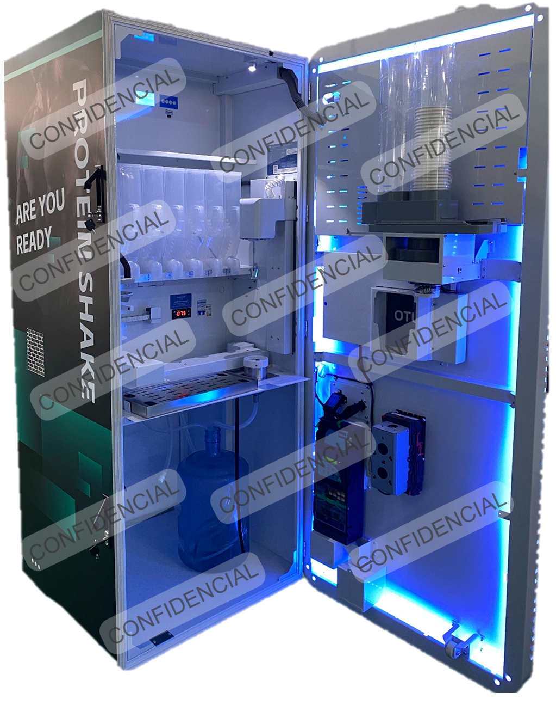
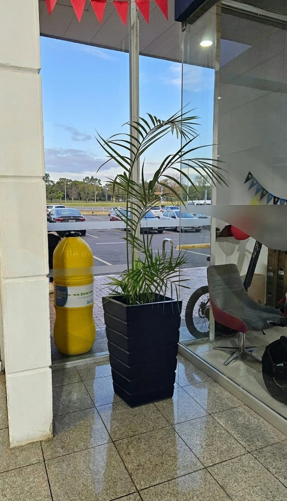
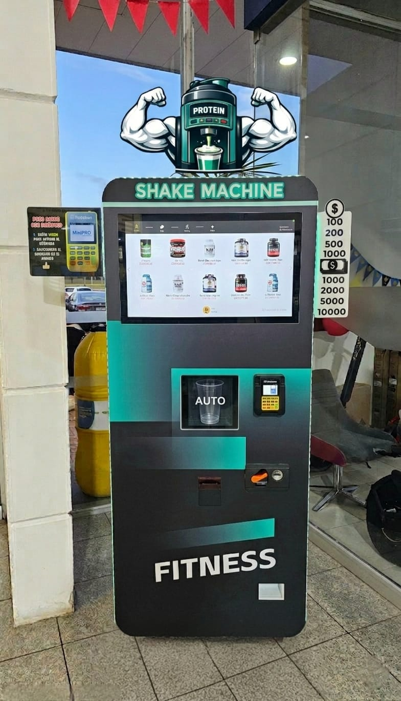
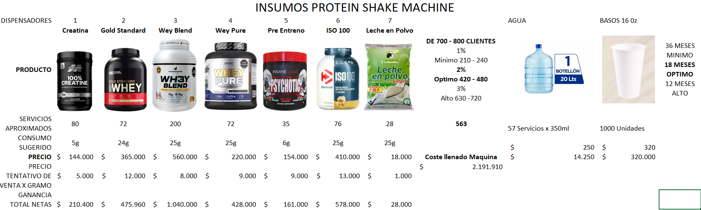
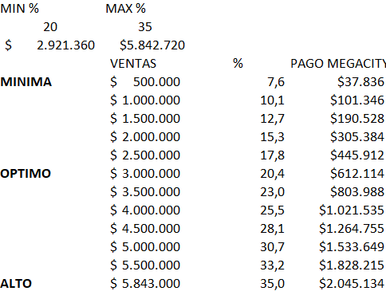

Retail wellness automatizado
Propuesta de valor
Más que vending: una unidad comercial conectada al ecosistema fitness.
Tomando el deck como base, la propuesta combina conveniencia, activación de marca, monetización del espacio y una capa digital que profesionaliza la operación.
Conveniencia inmediata
Proteínas, creatina, vitaminas y suplementos al salir del entrenamiento, sin fricción, sin filas largas y en un punto de alto tráfico.
Ingreso complementario
El centro comercial o aliado participa en ventas sin asumir la inversión inicial, mientras la máquina capitaliza tráfico ya existente.
Imagen innovadora
La instalación proyecta una experiencia moderna, enfocada en bienestar, tecnología y consumo saludable.

La máquina
Diseñada para retail físico, pensada como producto tecnológico.
7 compartimientos de suplementación
El deck ya plantea una capacidad base para múltiples insumos y líneas de producto, abriendo combinaciones y venta cruzada.
Experiencia higiénica y rápida
La promesa comercial gana fuerza cuando el usuario percibe una dispensación limpia, precisa y lista en segundos.
Formato ideal para gimnasios y centros comerciales
Su ventaja aumenta donde ya existe tráfico afín: zonas wellness, food halls, supermercados ancla y operadores fitness.
Espacio subutilizado
Así se ve la máquina cuando convierte una esquina ociosa en un punto de venta.
El contraste es potente: donde antes había un espacio de paso sin explotación comercial clara, después aparece una instalación visible, ordenada y lista para monetizar tráfico existente sin montar un local completo.

Antes
DespuésActiva metros improductivos
Aprovecha zonas residuales, esquinas de entrada o franjas junto a vitrinas sin requerir obra civil compleja ni una tienda adicional.
Convierte visibilidad en venta
Donde ya existe paso peatonal, la máquina agrega una oferta concreta y de compra rápida que transforma atención en ingreso.
Ordena y moderniza el entorno
Más allá de vender, la instalación comunica tecnología, bienestar y uso inteligente del espacio comercial disponible.
Operación conectada
La app no solo acompaña la máquina: la vuelve escalable.
Aquí extrapolamos el siguiente salto de valor para inversionistas: una capa digital que permita operar una red de máquinas con control, trazabilidad y data accionable.
Monitoreo en tiempo real
Estado de la máquina, niveles de stock, alertas de insumos, temperatura, mantenimiento preventivo y uptime consolidado.
Gestión de transacciones
Ventas por franja horaria, ticket promedio, productos más vendidos, conciliación por ubicación y auditoría operativa.
Seguimiento de costos
Costo por bebida, margen por insumo, rentabilidad por punto y variación mensual para ajustar precio o surtido desde la app.
Gestión multi-sede
Un solo dashboard para múltiples máquinas, comisiones por aliado y rendimiento comparado entre centros comerciales o gimnasios.
CRM y fidelización
Cupones post-entreno, promociones bundle con supermercado y campañas cruzadas con marcas aliadas o membresías fitness.
Reportería para aliados
Panel ejecutivo para host e inversionistas con ventas netas, comisión variable, rotación de producto y proyección de payback.
Valor para el negocio
Lo que un inversionista ve no es una máquina: es una red comercial modular.
Canal de distribución propio
Reduce dependencia de retail tradicional y abre presencia física premium sin montar una tienda completa.
Ingresos recurrentes y medibles
Cada punto genera flujo, comportamiento de compra y aprendizajes replicables para decidir nuevas ubicaciones.
Barrera operativa
La ventaja no está solo en el hardware: está en la operación, las alianzas, el abastecimiento y la data histórica del consumo.
Modelo económico
El deck ya cuenta una historia potente de payback y reparto variable.
Reorganizamos la información para que sea más fácil de escanear y defender frente a un aliado comercial o un inversionista.
Supuestos base del modelo
- Inversión por máquina: $30.000.000 COP.
- Escenarios de recuperación: 36, 18 y 12 meses.
- Flujo diario reportado por el deck: 700 a 800 personas.
- Conversión estimada mensual: 1% a 3%.
- Compras mensuales proyectadas: 210 a 720.
Escenario óptimo narrado en la presentación
- Recuperación objetivo: 18 meses.
- Compras mensuales: 420 a 480.
- Ventas totales del ejemplo: $2.921.360 COP.
- Participación para el host en ese ejemplo: 20%.
- Payback estimado alcanzado: 15 meses.


Ángulo inversionista
Secciones que elevan la narrativa más allá del deck inicial.
Tesis de escalabilidad
Expansión por clústeres: centros comerciales, gimnasios premium, universidades, clínicas deportivas y hubs corporativos.
Ventaja competitiva
Ubicación estratégica, operación conectada, acuerdos con marcas de proteína y un canal de venta inmediato después del entrenamiento.
Data como activo
Qué sabor rota mejor, qué horario convierte más, qué sede recupera más rápido y qué alianzas elevan ticket promedio.
Roadmap de producto
Modo white-label para marcas, membresías corporativas, suscripción de reposición y panel de pricing dinámico por sede.
Riesgo operativo controlado
Instalación, mantenimiento y stock gestionados por el operador, con seguimiento remoto y alertas para evitar tiempos muertos.
Sinergias comerciales
Bundles con supermercado, descuentos con gimnasios, activaciones con marcas deportivas y campañas patrocinadas en la app.
Siguiente paso
Presenta la máquina como una experiencia, y el negocio como una red.
Esta versión ya mezcla narrativa, transparencia y video real con scroll sincronizado. Si luego quieres, podemos llevarlo más lejos con transiciones entre escenas, hotspots sobre la máquina o un cierre con llamada comercial más agresiva.